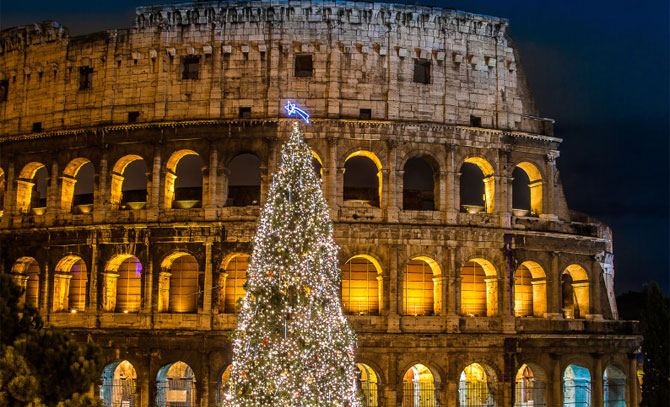
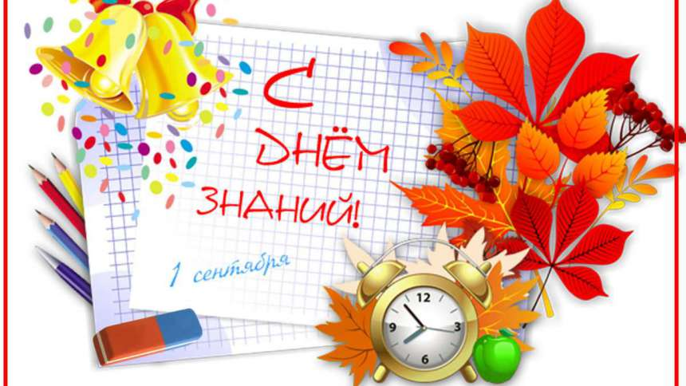

Интересные факты о Новом Годе!
1. Знаменитая Ёлочка
Ёлочка-Очень важный атрибут Нового Года, отсюда в ней есть много смысла, ибо обозначает она Начало новой жизни, а также праздник, подарки и веселье!
2. Новый Год в Риме?
Первый Новый Год праздновался в Риме более 2000 лет назад самим Юлием Цезарем
3. Новый Год в День Знаний?
Знали ли вы что в России ещё до указа Петра Новый Год отмечали 1 сентября?